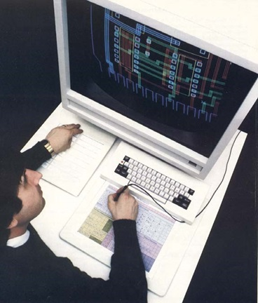
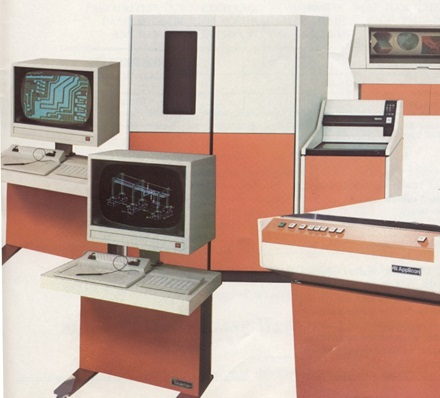
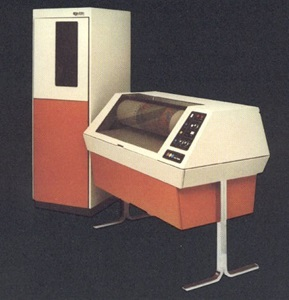
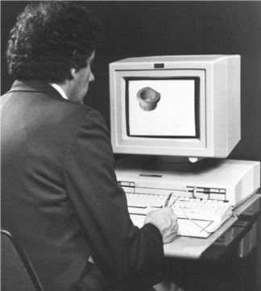
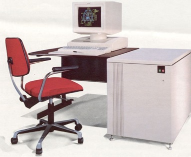
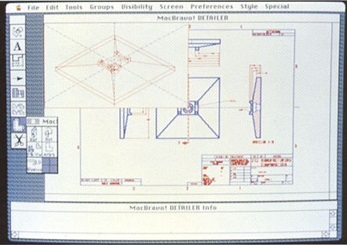
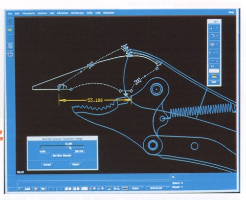
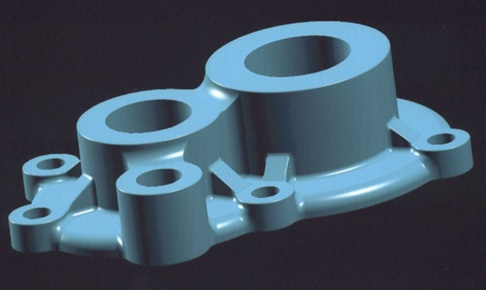

第7章：Applicon
Applicon成立于1969年，最初名为Analytics，Inc.，由来自麻省理工学院林肯实验室的一群程序员创立，他们一直在开发先进的交互式图形技术。四位创始人都拥有博士学位，分别是Gary Hornbuckle、Fontaine Richardson、Richard Spann和Harry Lee。他们在林肯实验室的工作包括开发一种命令输入技术，即使用笔记本电脑和手写笔在平板电脑上轻轻一画。平板电脑的命令输入技术也成为公司产品的一个核心特色。
据Richardson[1]回忆，创始人们经常在林肯实验室一起吃午饭，并经常讨论华尔街对技术初创企业的热衷。许多人忘记了，20世纪60年代末看到了一个类似的高科技热潮，尽管规模较小，但这种热潮在未来30年中多次重演。其中一个团队的模式是数字设备公司，该公司由林肯实验室的工程师于1957年创立，在1969年已经成为计算机行业的主要参与者。麻省理工学院斯隆学院的Edward Roberts教授对初创企业进行了调查，包括前林肯实验室的员工成立的企业。他在实验室的一次讲座上介绍了他的研究成果，称早期初创企业中有80%在五年后仍然具有生命力。这犹如加油投入到火中，四人决心成立一家公司。
随着讨论的深入，工作午餐变成了晚上和周末的会议，结论是他们应该开展以他们的个人专业知识和经验为中心的公司——电子设计软件。在充分讨论之后，Hornbuckle担任公司总裁，Lee担任董事长，Spann担任销售和市场副总裁，Richardson担任产品开发副总裁。实际上，所有创始人都参与了公司早期产品的开发。
最初的资金由W.R.格雷斯和公司提供，该公司安排了一项最初的银行贷款，并于1969年底以40万美元购买了该公司的六分之一股份。通用电气于1972年和1973年投资于该公司，并在公司早期的Applicon用户的鼓励下进行投资。最终，通用电气的投资将代表Applicon的近28%的所有权在公司首次公开募股之前。J.H. Whitney是一家风险投资公司，后来在Computervision的覆灭中发挥了重要作用，于1974年进行了投资。在公司成立不久之后，他们被告知名为“Analytics”的名称已被另一家公司使用。Applicon是一个由“应用程序”一词缩写而成的虚构名称。 伊利诺伊大学厄巴纳-香槟分校的计算机科学系网站上有富恩特·理查德森的简短传记。根据该网站，在1968年，他成为该机构第二个获得计算机科学博士学位的人。据该网站称，Applicon的计划是开发一套四个产品。“其中一个是用于设计集成电路光刻版，一个是用于数字电路模拟，一个是用于频域电路综合，另一个用于微波电路分析。”除了需要独立的计算机系统的掩模布局程序外，该软件旨在按分时共享的方式销售。当1969-1970年间出现经济衰退时，潜在客户发现很难按照使用费用购买软件。Applicon放弃了分时共享软件，并专注于可以作为设备资本化销售的集成电路掩膜布局系统。这个产品很快就被称为“设计助手”。该公司的第一个客户是日本的松下公司。公司最初的用于设计印刷电路板和集成电路的交互式图形解决方案使用IBM的1130计算机，终端由存储管显示器、键盘和平板组成。这些终端由位于马萨诸塞剑桥的另一家MIT分支机构Computek设计和制造。选择IBM 1130是因为它既可以租赁又可以出售，这是Applicon创始人认为有助于部分销售情况的融资问题。大约销售了八到十个这样的系统。此后不久，Applicon转向数字设备公司的新PDP-11，并且该公司几乎一直使用Digital的产品直到1990年代。 Applicon系统几乎被毁掉 以下故事是由Fontaine Richardson3提供的。在早期，我们必须交付系统，并将安装人员送到现场进行安装并进行培训。客户支付运输系统的费用，因此，明显的选择是租一辆卡车，将系统运到现场，在驾车回家之前安装系统并培训客户。我们的第一个DA 700系统（该产品的PDP-11版本）由通用电气购买，用于弗吉尼亚州韦恩斯伯勒。它于1971年8月底交付。吉姆，现场服务技术人员和我在马萨诸塞州伯灵顿的一个星期天晚上6点左右将系统装在租来的卡车后面，并一直开车向南，打算整夜走到下一个星期一早上第一时间交付系统。当我们开到费城时，在驾驶下雨时，我们都无法保持清醒，已经是凌晨2点了。我们决定找个旅馆睡一下，然后第二天再走。吉姆开车。我告诉他在旅馆门廊下开车，这样我去询问是否有房间可用时就不会被淋湿。卡车比遮篷高，我们以大约5英里的速度撞到了遮篷。这引起了旅馆的夜间店员的注意。尽管如此粗鲁的到来，他确实有一个房间给我们。我们停了车，走向旅馆。我恰好回头看看卡车，注意到发动机盖上正冒出异常多的蒸汽。这让我感到不寻常，我回去看看发生了什么。我在卡车的引擎盖上放了手，烫伤了手。我不认为这是典型的。我看到卡车前面的格栅，看到火焰。总是避免冒险工作的人，我告诉吉姆留在卡车上，把引擎盖打开。
我跑到旅馆打电话给消防队，并查找灭火器。我再次唤醒了旅馆的服务员，并要求他拨打火警电话。我跑遍整个旅馆，最终找到了一种饮料类酸式灭火器，并拿到了卡车上。吉姆无法打开引擎盖，并认为卡车爆炸在即。我们唯一的系统就在卡车后面，我知道我很难向客户和家人交代我让系统在火灾中消失了。我把灭火器倒过来激活，并将软管对准火灾的基部穿过卡车的格栅。我终于在漫长的时间里扑灭了火势。第二天早上，我们发现卡车的引擎盖上有一道黑色的烧痕，而当我们离开伯灵顿时并没有这样的现象，所以我们并不是做梦。我们查看了引擎盖下方，发现燃油管松了，正在往热的发动机歧管上滴油。这在高速行驶时不是太大的问题，但是在卡车停放后会引起爆发。我们顺利到达韦恩斯伯勒，虽然我们焦黑的卡车引擎盖给我们的故事增添了可信度，但我们的客户仍然持怀疑态度。
- 早期电子行业市场营销主要关注目标公司的概念设计部门，这与竞争对手 Calma 和 Computervision 等更关注这些公司的生产草图团队形成了鲜明对比。
- 公司在 1975 财年实现了超过 900 万美元的销售额，而到了 1978 年这一数字更是超过了 1800 万美元，而起点为 1971 年的约 50 万美元。
- 然而，在 1978 年公司销售额停滞不前，公司遭受了 70 万美元的亏损。
- 公司董事会成员 W. R. Grace 的 Alex Daignault 和 J.H. Whitney 的 Don Ackerman 认为公司在未来如果要有竞争力，必须探索新的产品策略，因为公司的销售增长已经开始受限制。
- 公司被收购或更换新的管理团队，Ackerman 招募了 Entrex 的总裁 Don Feddersen，他曾经是 Gould Data Systems Division 的总经理。
- 经过管理层的变革，Applicon 从一个技术驱动的公司转变为更加商业驱动的企业。其主要竞争对手当时是 Computervision 和 Calma，此外还有 Auto-trol Technology 和 M&S Computing (Intergraph)。
- Feddersen 管理开支比较紧，有时候甚至过于紧。他取消了一个名为 TI-9900 微处理器和光栅图形的独立工作站的开发项目。开始于 1977 年，本项目将成为计算机辅助设计行业中最早的工作站产品之一。
霍恩巴克尔在那年离开了Applicon。李早在公司离开了，而领先高级开发和工程责任的Spann在1976年离开了。创始人中最后一位Richardson在1980年公司上市后离开。霍恩巴克尔在1980年创立了一家名为Impress的新图形公司。Impress开发了一种能够扫描和编辑工程图纸的系统，主要用于技术插图。与此同时，Spann加入了Adage，一家计算机图形终端制造商，担任运营副总裁。他于1978年成为Adage的首席执行官，一直担任该职位直到1988年。Spann和Richardson最终都进入了风险投资行业。Spann成立了PreFund Associates，而Richardson成为Eastech的长期普通合伙人。
早期Applicon系统描述
在20世纪70年代和80年代初，Applicon的产品使用AGS命名法。AGS代表Applicon图形系统。典型的数字PDP-11系统支持最多四个终端。
Applicon的AGS软件的关键特征是其模式识别命令输入，或者公司所称的平板符号识别。例如，如果用户想要放大绘图的特定区域，只需使用平板笔画一个圆圈，系统便会重新生成只显示感兴趣区域的图像。水平尺寸通过输入点后跟一个破折号插入，而垂直尺寸线则是一个点后跟一个短垂直线。底层软件是命令驱动的，这些平板图案仅仅启动一系列命令。系统附带了许多预定义的平板图案，但用户可以创建代表所需任何专业化操作序列的图案。
最初的AGS软件是用汇编语言编写的，Applicon的PDP-11系统大部分时间没有使用Digital提供的操作系统。直到1978年公司转向RSX-11M实时操作系统，程序的编写越来越多地采用FORTRAN。同时，在1978年，Applicon推出了其第一款光栅显示终端作为替代存储管。这些早期终端的分辨率相对较低，但不需要在移动或删除时完全重绘图像。不久之后，Applicon是首批提供彩色光栅终端的CAD公司之一，为设计和分析图像的可视化增加了一个新维度。
这个时期的关键系统组件是一台Digital PDP-11/34迷你计算机。Applicon在自己的机柜中重新包装了这台计算机，搭配上了Graphics 32处理器，称之为AGS/895中央处理设备。除了208KB的主存储器外，AGS/895还包括一个200MB的磁盘驱动器（可扩展到800MB）和一个双密度（800/1600 bpi）磁带驱动器。Graphics 32有自己的64KB存储器，可以为多达四个终端执行矢量到光栅的转换和图案填充的任务。AGS/895能够支持四个终端和四个背景任务，如PCB布线。在1980年代，Applicon为AGS/895提供了十种不同的存储管和彩色光栅终端。（Applicon的营销部门还使用“Image”命名法来描述这些系统。）一个典型的系统，可能配备两到三个终端，售价为30万美元。

公司提供的基本系统称为AGS/900多任务操作系统，它采用AGS/895中央处理设施，运行Digital的RSX-11M操作系统。AGS/900是公司互动多活动图形环境或IMAGE的软件框架，它使单个系统能够同时运行二维和三维软件。具体的面向应用的产品称为AGS/870-I二维和AGS/880-I三维系统。AGS/870-I针对电气设计任务，特别是印刷电路板的原理图和物理设计，而AGS/880-I则面向机械设计和制图。为这些系统提供了许多针对特定任务的应用模块，包括PCB布局和布线、线路清单生成、光绘输出、材料清单生成、嵌套和切割平面开发以及数控等。第一个机械系统卖给了通用汽车公司。
除了AGS/900系统，Applicon还提供了AGS/860 VLSI图形应用系统，它包含针对VLSI电路掩模设计和编辑的二维软件。它采用与其他Applicon系统相同的交互技术，还提供了一些可选的输出包，专门用于支持VLSI艺术生成。AGS/860使用与AGS/900系统相同的AGS/895中央处理设施，只是支持更少的终端。

AGS/860的一个关键软件组件是AGS/1610 Designer/MOS交互式设计包。它提供了一套工具，用于设计和编辑利用Applicon的彩色图形技术的集成电路。其他专业的AGS/860软件包括设计规则检查包（AGS/862），用于在生成专门的输出之前验证VLSI设计的几何布局。还有输出软件包来支持CalComp、Xynetics、Versatec和Applicon绘图仪，以及Mann和Electromask光学图案发生器。当时，这是市场上的一个主要集成电路设计系统，与Calma和Computervision提供的类似产品一起。几年后，它将被来自Daisy和Mentor Graphics等公司的新一代系统所取代，这些系统引入了基于电路逻辑定义而不是纯图形表示的新设计程序。
到1981年，公司终端出货量的90％以上是光栅设备，其中许多是彩色单位。Applicon开发了自己的图形处理器-一个32位比特切片微型计算机系统-它独立于系统的中央处理器处理图形任务。
与那个时代的大部分交钥匙系统供应商一样，Applicon对生产销售的系统中尽可能大的部分进行制造感兴趣。这促使Applicon设计和制造了1977年行业中的第一个连续喷墨彩色图形绘图仪。公司受到了剑桥管理咨询公司Arthur D. Little的Walter Carnes的接触，该公司与由Heinrich Hertz的孙子Helmut Hertz在瑞典开发的“打印点跳跃”喷墨技术有关。ADL正在寻找一个许可方以使用该技术制造和销售彩色绘图仪，而Applicon对此持开放态度。预期的是它可以销售给公司的客户，以制作集成电路和地图的绘图。
Applicon彩色绘图仪使用三种特殊配制的墨水（洋红色、黄色和青色）来产生具有300点每英寸分辨率的绘图。纸张（长达36英寸×48英寸）被固定在旋转的滚筒上，打印头通过步进电机控制的导程螺旋杆从滚筒一端移动到另一端。滚筒的旋转速度由用户控制，在最快速度下，它能够在仅8.5分钟内生成22英寸×34英寸的图，并且高质量的绘图可能需要五倍于此的时间才能制作出来。

Applicon彩色喷墨绘图仪
该绘图仪不是在线设备，而是通过磁带驱动器进行控制。系统的一部分是Applicon的COLOR软件系统，也是由一家瑞典开发商授权的，该系统将传统的矢量和空间数据转换为绘图所需的光栅格式，并将该数据放在磁带上。该软件可产生超过5000种不同的颜色。该公司将彩色绘图仪推广用于地图制作、地震数据分析、印刷电路板设计和图形艺术应用，但不适用于机械设计工具。它在1980年的公司收入中占据约6％的份额。
在1970年代末，Applicon与其他几家公司建立了合作开发和营销协议。其中之一是与Structural Dynamics Research Corporation（SDRC）的合作，促进了Applicon机械设计软件与SDRC计算机辅助工程（CAE）软件的集成。参见第17章。这种集成只适用于运行RSX-11 / M软件的数字PDP-11系统。第二个协议是与University Computing Company（UCC）签订的协议，后者开发了自己的用于编程机床的APT软件，称为UCC-APT。在这种环境中，Applicon用户可以设计零件并生成NC加工指令，然后使用该信息生成APT源文件或APT CL（切削线）文件。然后，这些数据会被UCC的APT软件和后处理器库处理，以生成特定机床的控制磁带。
即使在1980年代，Applicon软件的功能受限，同时硬件性能也有限，用户也正在看到显着的生产率提高。像德克萨斯州休斯工具（Hughes Tool）等客户正在公开表示，新的设计完成时间缩短了一半。[6]生产率在1980年代是一个重大问题，特别是在美国。当时，该国正在经历创纪录的通货膨胀，而生产力的增长异常低。当时，很少有人将这两个问题联系在一起。二十年后，该国将经历非常低的通货膨胀和高生产力增长，其中很大一部分归功于CAD / CAM技术的爆炸式使用。
公开发售，然后斯伦贝谢收购
费德森在1978年4月加入，到1980年初他成功让Applicon重回正轨。1980年4月30日结束的财年收入同比增长78％，达到5080万美元，盈利增长近五倍，达到310万美元。虽然该公司最强的市场领域是电子领域，但它清楚地认识到机械CAD系统的最大潜力。截至4月30日的财年收入和盈利分别为：
| 财年 | 收入 | 盈利 |
|---|---|---|
| 1974 | $7,300,000 | $300,000 |
| 1975 | 9,500,000 | 100,000 |
| 1976 | 10,183,000 | $31,000 |
| 1977 | 16,640,000 | 789,000 |
| 1978 | 18,372,000 | (717,000) |
| 1979 | 28,469,000 | 671,000 |
| 1980 | 50,776,000 | 3,149,000 |
到了 1980 年，已有超過 500 個 Applicon 系統在使用，員工增加到了 785 人，公司建造了一個佔地 120,000 平方英尺的製造廠。這似乎是一個上市的絕佳時機，公司於 1980 年 7 月 22 日以每股 22 美元的價格出售了 1,045,000 股股票。與此同時，擁有優先股和認股權的投資者將其股票轉換為普通股。募集的資金中有近四分之一用於償還公司在前兩年快速增長期間所負擔的銀行貸款，剩餘的資金用於未來擴張。截至 1980 年中期，關鍵人員如下：
- 唐纳德·费德森 - 总裁兼首席执行官
- 唐·阿克曼 - 董事长
- 大卫·巴伯 - 市场副总裁
- 斯蒂芬·谢海尔 - 财务副总裁兼财务主管
- Richard Diephuis – 系统开发副总裁
- Thomas Genova – 工程副总裁
- Robert McCormick – 国际市场副总裁
- William Mason – 运营副总裁
- 阿尔伯特·莫尔顿 - 产品开发副总裁
- 詹姆斯·尼茨 - 销售副总裁
- 丰坦·理查德森 - 行业营销副总裁
在Applicon上市之前，通用电气公司提出以每股20美元或约6600万美元的价格购买其未拥有的72％的股份。当这个提议被拒绝时，通用电气开始寻找另一家CAD / CAM供应商，并最终收购了Calma。受联邦贸易委员会的压力，通用电气在1981年中期进行了二级放弃其Applicon股票。与此同时，Applicon以每股33美元的价格出售另外260,000股股票。在1981年中期，理查德森离开Applicon成为MIT的独立顾问和访问科学家。
当Applicon上市时，约有20％的收入来自国际客户。其中一半业务来自欧洲，而日本和世界其他地区则占余额。在国内，该公司有23个销售办事处分为五个销售区，以及在六个欧洲国家设有销售办公室。 Applicon在日本的经销商是Marubeni Electronics。总体而言，全球共有192人从事营销，销售和销售支持工作。
1981年9月7日，Applicon宣布被Schlumberger收购，交易价值约为2.32亿美元，这使大多数行业观察家感到震惊。Schlumberger是一家法国控制的公司，注册在荷属安的列斯群岛，在纽约设有总部。它是石油和天然气生产者的各种服务的主要供应商，早在1981年就收购了数控软件供应商MDSI和Fairchild半导体公司。收购Applicon后，MDSI撤回了其低成本的COMPDRAW IV交钥匙式系统，并减少了实体建模的开发工作，这个领域留给了Applicon。这两家公司成为了Schlumberger所称的计算机辅助系统集团的核心。最终，Schlumberger将Applicon与MDSI合并，并将合并后的公司总部搬到了密歇根州安阿伯，那里是MDSI所在的地方，但这一过程持续了数年。最初，Applicon和MDSI之间几乎没有合作。每家公司都走自己的路线，这与Schlumberger高度分散的管理风格相吻合。
为了扩大其机械产品线，Applicon早些时候与SDRC签署了上述开发和营销协议。根据该协议，Applicon重新销售SDRC的Supertab有限元建模软件，而SDRC则在美国和欧洲建立了半自动化设计服务中心，这些中心配备了Applicon系统。客户可以每个工作站小时租用这些系统50美元，或雇佣SDRC设计师和绘图员来完成工作。到1982年初，两家公司之间的工作关系已经有些紧张。同时，一群SDRC经理正在考虑建立自己的公司来开发和营销CAE软件。这个团队由Dick Miller、Rex Smith、Paul Vollbracht和Vic Nicolas以及Jim Brown（他是General Electric的合作伙伴，如第17章所述）组成。
这个团队向Feddersen提出了为Applicon开发CAE软件的提议。最终，SDRC的首席执行官Jason（Jack）Lemon找出了史密斯参与这项计划的事实，并指责他计划离开公司。史密斯将这一信息告诉了其他人，然后联系Feddersen，看看是不是他告诉了Lemon。Feddersen的回应是雇佣这个团队成为Applicon的员工，并在辛辛那提附近设立一个办事处。在雇用了这个团队之后不久，Feddersen还雇用了SDRC时任总裁兼首席运营官Russ Henke。 Henke在Applicon的工作是负责该公司的机械活动。在Henke加入之后，他要求Miller搬到波士顿担任机械团队的营销经理，史密斯则接管软件开发。史密斯基本上是通勤到波士顿，而不是搬家。
引入实体建模软件
1981年6月，Applicon通过从位于纽约Elmsford的MAGI（Mathematical Applications Group，Incorporated）许可了一个名为Synthavision的软件包，初次进入了实体建模领域。该软件包被简称为Applicon的Solids Modeling，可在Digital的VAX 11/780和11/750系统上运行。实际实现有些繁琐。用户需要在Applicon的PDP-11 AGS系统上创建线框三维模型，然后将数据转移到VAX计算机上，在此基础上Synthavision使用14种不同的基本形状创建一个实体模型，这通常需要几分钟的时间。然后将模型连接到与VAX连接的彩色终端。数据传输是通过DECnet进行的，DECnet现已成为Applicon产品的标准，或通过磁带进行传输。
在Synthavision中生成模型后，用户可以通过它来拓展和计算一些额外的组件和质量参数，例如重量，体积和重心。此外，用户还可以定义应转换为工程图纸的视图。然后，将该数据返回到AGS系统中，作为没有或显示虚线的线框图像，以生成典型的工程图纸。然而，不能在VAX系统上更改该模型，必须使用AGS软件进行更改，然后在VAX上重新生成更改后的模型。总体来说，其目的不是与实体交互式设计，而是使用该技术来增强分析，可视化和干涉检测。
这款软件在1981年在Maryland州巴尔的摩的NCGA会议上首次亮相。据《安德逊报告》称，“Applicon在巴尔的摩的NCGA会议上展示的演示是真正的吸引人。”Applicon是首个提供标准的实体建模的开箱即用 CAD 系统供应商。价格相对昂贵，每份约为50,000美元，并需要PDP-11运行AGS系统的配合。该公司采取了一个有趣的步骤，商标注册了“Solids Modeling”这个术语。据悉，这种行动在法庭上未被授权，或者该公司未试图执行该商标权。
与同时推出其第一款实体建模软件包的同时，Applicon还推出了一个新的PCB布线和放置软件包，旨在运行于VAX 11/750和11/780计算机上。将此软件移至VAX的主要结果是比公司目前使用的PDP-11/34的软件执行效果有所提高。Applicon声称在布线和放置速度上提高了50%到400%。电路原理图的交互式创建仍然在PDP-11上完成，使用公司的Video PCB System软件。然后从该数据库中提取出网络表，通过DECnet或磁带传输到VAX上，就像实体软件包一样。放置软件的价格为10,000美元，而布线软件的价格为40,000美元。
1981 年 11 月，Applicon 宣布了一款新的 PCB 包装和布置程序，补充了 6 月份公布的软件。一个月后，该公司推出了一款名为 Designer Logic 的新软件，该软件自动化了许多与集成电路原理图创建和运行逻辑模拟器所需的数据提取相关的任务。
同样在 1981 年 11 月，Applicon 推出了新的技术文档软件。实际上，与 Auto-trol Technology 提供的类似软件针对专业插画师的绘图任务不同，这款软件的作用是让用户合并文本和图形，并将页面图像输出到 Autologic APS-5 数字 CRT 光排版机或 Xerox 9700 电子印刷系统。这些软件接口每个售价为 17,500 美元。
Applicon 在 CAD 行业的 AEC 领域中也有适度的存在，并提供了用于流程工厂管道设计等应用的软件。该公司国际市场部门的 Kevin Cavenaugh 在 1982 年 11 月撰写的一份内部文件描述了该公司为一家欧洲化学公司参加的竞争基准测试。除了使用 Applicon 的管道设计软件进行传统工厂设计外，两名应用工程师花了一周时间建立了工厂的立体模型。这个模型显示，拥有几个严重缺陷的展望设计，包括一根穿过两个大梁的管道以及一个穿过另一根主要管道的楼梯。据说，该公司对此印象深刻，计划购买 Applicon 系统，而不是 Intergraph，尽管后者已经安装在另一家公司的现场。我们不知道这是否最终发生，因为这份备忘录中没有标识展望的公司。总的来说，Applicon 从未成为 AEC 市场空间的主要因素。
VAX 时代开始
Applicon自开始开发CAD系统以来，一直致力于使用数字计算机。当VAX 11/780推出时，该公司的技术和市场人员肯定将其视为AGS产品线的一种逻辑延伸。每台机器价格高达25万美元，对公司的客户来说昂贵。当Digital宣布未来将推出更低成本的VAX 11/750时，这改变了方程式，公司开始认真努力将这台机器添加到其产品套件中。随着VAX的推出即将到来，Applicon避免向公司的产品线中添加更强大的PDP-11计算机，例如PDP-11/70。在1981年11月在底特律举行的AUTOFACT展会上，Applicon让媒体知道基于VAX的系统的实施比原定计划延迟了一年以上。在同一贸易展览会上，公司透过烟玻璃面板展示了其新的光栅工作站。
公司于1982年4月重新组织了其计算机产品线，并宣布推出4000系列产品。它从4225图形处理设备开始，该设备包括PDP 11/34系统，一个80MB磁盘驱动器，一个单色工作站，一个32位图形显示处理器以及基本应用软件，价格略低于10万美元。4245增加了一个300MB磁盘驱动器和一个磁带单元，价格从16万美元起。而顶端的4275则基于VAX 11/751计算机，据该公司称，其可支持多达12个终端，相比PDP-11/34支持的四个终端。基于VAX的4275显然在仿真模式下运行了大部分16位PDP-11代码，尽管一些早期的32位测试代码可能已经包含在此产品发布中。
据CAD / CAM Alert报道，Applicon的销售团队在引入4275方面做得非常好，因为过早地营销此单元将冻结公司现有的PDP-11产品销售。该公司宣称，基于VAX 11/751的4275可支持12个终端的说法过于乐观，一个合理的配置最终证明只有两到四个终端，除非用户只是进行基本的绘图任务。该公司还将SEED，一种商业数据库管理软件包，添加到其产品线中，以及一种用户编程语言。名为DGN的分布式图形网络通信协议支持VAX和PDP-11计算机之间的通信。随着VAX计算机进入产品线，Applicon的实体建模软件用户现在可以在同一台计算机上运行该软件，尽管需要在Synthavision和公司的CAD软件之间翻译数据。
同时，Applicon推出了一款新型彩色光栅工作站，分辨率为768x576，并提供了可选的硬件抗锯齿功能[12]。后者技术可以平滑非正交线条，使其看起来不那么锯齿状。这是早期光栅显示终端的一个重大问题，并且是许多供应商仍然提供存储管终端的原因之一。抗锯齿选项被称为PERL（Perception Enhanced Resolution Logic）。彩色版本的此终端售价为70,000美元，而单色单位售价为40,000美元。
1983年中期的Applicon状态
当Applicon准备推出一代新的机械设计软件时，回顾一下该公司在1983年中期技术和业务上的现状可能是有意义的。该公司宣传自己在三个市场领域中拥有业务；PCB和集成电路的电子设计，机械设计和AEC。如前所述，与Intergraph，Auto-trol，Calma和Computervision相比，它在AEC空间中不是一个重要因素，并且很少有证据表明该公司计划投入大量资源开发新的建筑和土木工程软件。同样，显然，它的兴趣从多年来一直是主要因素的电子设计转向机械市场，在许多人看来，这里将是最重要的未来增长点。
该公司的业务模式基于构建其销售的系统的大部分内容。VAX和PDP-11计算机是从Digital购买并重新销售给客户，尽管该公司并未销售较大的VAX 11/780，只有中端的11/751。终端是收入的主要来源，并且主要由公司内部制造。到此时，几乎所有正在出货的设备都是光栅设备，其中许多是彩色设备，并包括该公司的专有32位图形处理器。除了软件之外，这可能是Applicon业务收益最高的部分。到1983年，该公司似乎不再生产它在1977年推出的彩色喷墨绘图机，并正在转售像CalComp这样的公司的绘图机。该公司的大多数产品都是在马萨诸塞州比勒里卡的一家面积为170,000平方英尺的制造工厂中生产。
该公司通过30多个销售办事处的直销团队销售其产品。区域总部位于芝加哥、费城、达拉斯和圣克拉拉。欧洲总部设在法国巴黎，并在德国和英国设有销售代表处。其他地区如澳大利亚和日本则由经销商处理。此时，该公司已经拥有1,500个系统的安装基础，支持超过3,000个交互式工作站。每个系统的两个工作站是竞争系统中最低的比例。此时，Applicon提供了数百个专业应用程序包。由于该公司使用标准数字计算机，为这些机器提供的整个第三方软件包库也可以供Applicon的用户使用。
关键人员包括：
唐·费德森 - 总裁兼首席执行官
罗斯·亨克 - 副总裁 - 实际上是第二负责人
Dr. Jack Horgan - 规划和技术总监
Dick Miller - 市场营销总监
Rex Smith - 俄亥俄州发展中心总监
James Kotanchik - 系统软件总监
Richard Tarulli – 美国销售副总裁
新一代的软件
在1981年，Applicon开始开发其最重要的软件产品BRAVO!。当时，该项目预计需要18个月完成，但实际上需要42个月和2200万美元的研发资金，在1983年6月28日正式宣布。该软件是为Digital的VAX产品线编写的，包括11/730、11/751和11/780。这是全新的软件，而不仅仅是公司的CAD/CAM软件的PDP-11版转换为VAX运行。同时，Applicon还向从Digital直接购买VAX 11/780电脑的客户提供其CAD/CAM软件。BRAVO!的推出大大重新激发了公司的活力。然而，该软件在准备就绪之前数个月就已发布，早期用户在使用过程中遇到了一些功能问题。
BRAVO!包括一个新的数据库管理器、一个带有屏幕菜单的新的用户界面、一个集成的交互式实体建模器（Solids Modeling II）和机械工程工具。交互式的二维和三维设计和草图模块保留了Applicon Editor的命名法和早期软件的Tablet Symbol Recognition功能。有限元建模和分析可作为选项提供。据说，实体建模器可以在五秒钟内响应大多数输入命令，但只能使用有限的颜色。当用户想要看到模型的逼真渲染时，可以完成，但需要更多的时间。BRAVO!还包括一个名为AGL（Applicon图形语言）编程包的新用户编程工具包。
Applicon公司早期的实体建模软件包使用VAX计算机批处理模式生成实体模型，使用在AGS’ PDP-11/34计算机上创建的线框模型。这很适用于可视化模型和计算质量特性，但不是交互式设计工具。相对的，实体建模II是一个真正交互式的实体建模程序。用户可以使用几何基元（如球体、立方体、圆锥甚至包含自由曲面和旋转曲面对象的对象）构建单个部件和组件的模型。完成模型后，可以从模型中提取带有隐藏线的线框图像，并用于制作工程图。对这些图纸所做的更改不能用于更改实体模型-这是单向路径。
虽然大多数用户可能难以适应实体建模的概念，但Applicon的曲面建模包对typical BRAVO！客户更有用。这种曲面建模软件与传统的线框设计更紧密地集成在一起，比实体软件包更紧密。用户可以创建从简单的球体、圆锥体和圆柱体到旋转曲面和弯曲B样条曲面的曲面。使用这些曲面构建的模型可以被其他应用程序使用，如有限元建模和NC零件编程。这个过程并不像销售宣传所说的那样完全自动化，数据重录的量仍然很大。
模型数据也可以由Applicon编辑器用于制作绘图。据说，在绘制横截面时，生产率的提高特别令人印象深刻。在与MDSI最终合并之前，Applicon从未成为高端NC市场空间中的主要因素。迪克·米勒(Dick Miller)记得，他们曾经为马丁-玛丽艾塔的一个客户现场开发了五轴加工能力，但后来发现这个工厂没有五轴机床，而这个要求是一个”未来可能”的问题。
数据库管理器被设计为处理所有图形和属性信息，各个应用程序可以访问所需的所有数据。它的意图是消除所有应用程序之间的图形或属性数据翻译。随着实体建模II和新的曲面建模包，Applicon拥有了行业内第一个混合建模能力，用户可以在线框、实体和曲面几何的组合中工作。该公司还宣布了IGES的预处理器和后处理器，IGES是大多数大型用户组织快速成为系统前提条件的规范。
这种新软件只提供在VAX平台上，这意味着现有的客户必须更换他们的PDP-11系统，如果他们想要使用BRAVO！。Applicon销售完整的一体化VAX 11/730和11/751系统，单个工作站11/730系统的价格开始在120,000美元以下。这不包括Solids Modeling II或Surface Modeling包。如果客户想要使用VAX 11/780，该系统必须直接从Digital购买，而软件和工作站则从Applicon购买。这种半拆分模式不包括使用非Applicon终端来利用Applicon软件的功能。许多软件包的价格根据使用的VAX计算机的大小而变化。比如，AGL编程包在11/730上的价格为10,000美元，在11/751上为20,000美元，在11/780上为30,000美元。这种1-2-3的定价比例也适用于其他BRAVO！模块。
除了Solids Modeling II和Surface Modeling外，该公司还推出了三个额外的机械工程软件包；GRAFEM（图形有限元建模）、IFAD（集成有限元分析和设计）和Mechanisms。GRAFEM是一个有限元分析预和后处理器，能简化有限元模型的创建、查看和编辑，以及查看分析结果。IFAD使用由GRAFEM创建的模型进行线性静态和动态分析。这些软件都是由Applicon内部开发的。Mechanisms软件包计算二维和三维刚体机械系统的静态平衡和时间响应数据。它使用了由Mechanical Dynamics Incorporated（MDI）授权的软件。虽然IFAD提供基本的分析功能，但一些用户显然希望使用更全面的有限元分析软件。为满足这一需求，Applicon与MacNeal-Schwendler Corporation签订了一项营销协议，授权该公司的MSC/NASTRAN软件用于基于BRAVO！的VAX系统。在这种情况下，GRAFEM仍可用于前处理和后处理。
这些都不是廉价的软件包。对于VAX 11/780，Solids Modeling的价格为75,000美元，Surface Modeling的价格为30,000美元，GRAFEM的价格为52,500美元，IFAD的价格为37,500美元，Mechanisms的价格为30,000美元。此外，编辑软件每个工作站的价格为7,500美元。结果是，一个配备全面设计和分析软件的六色工作站VAX 11/780系统的成本很容易接近100万美元。
事实是，大多数早期的BRAVO！客户使用该软件进行二维绘图而不是建立实体模型。根据《计算机辅助设计报告》1984年11月的一篇文章，BRAVO！1.0有两个主要问题——速度慢和文件大小过大。早期BRAVO！的安装之一Fisher Controls表示，对于某些绘图任务，BRAVO！的速度比Applicon早期版本的软件慢20到30倍。另一位客户表示，绘图文件与旧系统上相同的图纸相比，大小增加了6到18倍。在1984年9月下旬，Applicon开始提供BRAVO！1.5版本，该版本纠正了与二维绘图有关的许多性能问题，但没有解决文件大小问题或实体建模性能问题。《计算机辅助设计报告》建议，考虑安装BRAVO！的客户应该绝对购买VAX 11/750的浮点选项，还应该购买800 MB的磁盘驱动器以及最大量的主存储器，并在所有终端上安装Applicon的新显示列表内存选项。两年后，性能问题，特别是与实体建模相关的问题，仍然困扰着BRAVO！。
然而，一些用户在实体建模方面取得了进展，尽管不一定是使用Bravo！。Becton Dickerson的Endevco分部是一家飞机发动机和涡轮机振动测量仪器制造商，早在1983年初就开始使用Applicon的实体建模软件。该公司发现，它能够在三分之一的时间内设计传感器包装，这比早期的技术更快，外部供应商也能够更快地生产出更准确的样机。这种态度将在机械设计界普及化还需要十年时间。
作为产品发布的一部分，Applicon还推出了两款低成本图形终端。4620桌面彩色光栅工作站包括一个键盘和平板电脑组合成一个单元，如图7.4所示，和一个13英寸的8色监视器，分辨率为672×504。4620采用英特尔80186微处理器，包括256KB的程序存储器，可扩展到756KB。还可选择可选的软盘驱动器。这个单元售价仅为17,500美元，可能是当时主要的一体化CAD/CAM系统供应商提供的最低成本的彩色光栅终端。它旨在供业余用户使用，而不是全职CAD操作员。当这个终端在1983年中期推出时，Applicon宣布计划在1984年升级它，以支持CP/M-86操作系统，以便它可以支持与主机处理器无关的应用程序。
同时还推出了第二个工作站，4630模块化彩色光栅工作站。这个单元也有一个13英寸的监视器，但与公司的高端终端提供相同的768×576分辨率。价格为33,000美元，旨在供全职操作员和业余用户使用。
Applicon还推出了一个新的4265图形处理设备，采用升级版VAX 11/730计算机，具有2MB的主存储器、双密度（800/1600）磁带驱动器和160MB磁盘驱动器。不带任何终端，这个单元的价格为85,000美元，比公司以前提供的VAX 11/730系统的价格要便宜很多。基于VAX 11/751的4275图形处理设备也进行了重新打包，增加了更多的内存和更低的价格。VAX 11/780客户需要购买两个额外的软件模块才能使用Bravo！，一个工作站接口模块售价15,000美元，一个外设支持选项售价5,000美元。该公司声称，11/780系统将支持8至10个工作站。

BRAVO！的一个方面最终证明了是应用康的致命伤。在开发的早期，公司的软件人员决定使用一种被许多人，包括IBM，誉为未来编程语言的新编程语言PL/1编写BRAVO！。虽然VAX计算机运行VMS操作系统的PL/1编译器可以轻松获得，但大多数其他计算机系统没有类似的编译器。因此，这阻碍了应用康在1980年代后期和1990年代期间将BRAVO！移植到其他平台的能力。
中期80年代——Applicon 风起云涌的时代
BRAVO! 在公关方面起初表现相当积极。公司于1983年7月开始发货，并在同年被《财富》杂志评为“年度产品”[15]。1984年2月，CAD/CAM Alert 杂志发表文章，介绍了 Marshalltown, Iowa 的 Fisher Controls 和 Quincy, Illinois 的 Gardner-Denver Compressors Division 这两个长期的 Applicon 用户成功实施 BRAVO!的情况。两个公司都使用 Solids Modeling II 包，但并非主要的设计工具。从旧有的 PDP11/34 系统导入数据需要进行翻译。拥有大量老式设计数据的用户，如 Fisher Controls，在需要时翻译数据，而不是尝试一次性完成。该公司发现几何数据的翻译很顺利，而文本属性数据的翻译存在问题。显然，该文章是在 Fischer Controls 开始遇到《计算机辅助设计报告》中提到的性能问题之前写的。
Gardner-Denver 的 CAD/CAM 项目经理 Jim Sutton 希望 Applicon 可以“将线框几何图形与数据库中的实体建模相结合…以便能够更改实体并自动更新线框图”。显然，整合数据库的概念在产品发布时没有像 Applicon 暗示的那样成熟[16]。1984年年初，Applicon 开始发货其新的 4620 工作站，带有 CP/M-86 操作系统。这使该设备在不进行 CAD 任务时可以作为个人电脑使用。似乎用户不能同时执行两种类型的任务。
1984年初，Don Feddersen 被任命为斯伦贝谢公司计算机辅助系统集团的总经理。在这个角色中，他向斯伦贝谢管理层提出了更紧密地整合 MDSI 和 Applicon 的计划，但被告知公司的立场是将组织分开，而不是合并。不久之后，Feddersen 离开，成为 Charles River Ventures 的普通合伙人，该公司是一家风险投资公司。自1997年以来，他一直是高科技公司的私人投资者，并担任多家这样的公司的董事，以及自2001年起担任Bessemer Venture Partners的合伙人。他也是 Parametric Technology 的一位长期董事。
Feddersen的辞职是Schlumberger进行CAD/CAM业务最佳模式确定所做的一系列管理变革中的第一步。一开始，Pinot接替了Feddersen，最后Applicon的总裁被取代由General Electric的Intelligent Vision Systems Division的前总经理Alex Beavers担任。雇佣Beavers可能是导致Russ Henke于10月离开任Gould的Imaging and Graphics Division总裁的原因之一。
Beavers汇报给Schlumberger的执行副总裁Jimmy G. Lee，他负责公司的电脑辅助系统集团。其他管理变化包括Edward Oakley从HewlettPackard加入公司担任销售副总裁，几个月后Jeffrey Simon加入担任市场营销副总裁。Dick Miller于1984年夏天离开公司。与Miller、Jack Horgan和Jerry Sabath一起创立了Aries Technology的两个前Applicon员工Art McCray和Jerry Christopher一起参与了该公司。
1984年秋天，Applicon开始为基于工作站的产品铺路。当时，Apollo和Sun Microsystems通过公司如Auto-trol Technology、Calma、Mentor Graphics和Computervision在CAD/CAM行业中取得进展。该公司推出的首个这样的产品是Aria，一台独立的彩色工作站，内置一台Digital VAX 11/730小型计算机，看起来与之前推出的4265 Graphics Processing Facility非常相似，具有3MB主内存和13英寸的4620台式机彩色光栅工作站。见图7.5。
Aria包括数据库管理、二维和三维设计和绘图软件，于1984年底以6.5万美元的价格推出。初始价格预计在1985年1月1日时增至8.5万美元。在首次推出后，Aria产品线加入了几个19英寸彩色光栅显示终端。这在1985年4月的NCGA之后，推出了Aria II，将VAX 11/730替换为MicroVAX II，并支持各种Applicon终端。Aria II的基本价格为8.5万美元，发货预计在夏季中期开始。Aria II的高分辨率19英寸显示屏售价高达12.5万美元。同时，Applicon宣布支持新的Digital 8600“超级VAX”、VAX集群和IBM大型机接口。

《波士顿环球报》1985年2月2日刊登了一篇关于史克伦贝格及其子公司Applicon的广泛文章，深入阐述了自从史克伦贝格收购以来，公司的计算机辅助设计/计算机辅助制造市场份额急剧下降的情况。李先生对未来充满信心，声称史克伦贝格需要五年才能扭转局面，而他们只完成了三年的过程。李先生已经在史克伦贝格工作了25年，是公司烟斗咀嚼的代表，代表了公司的石油领域根源。
Stanley Klein，当时是 S. Klein 计算机图形通讯的出版人，曾说过：“Applicon 缺乏企业家精神，问题在于一个有大量资源的公司能否在每六个月地基石规则都变化的极快变化的市场中获得成功。”。虽然该公司越来越专注于机械市场，但在 1985 年 3 月，它成立了一个新的电子设计部门，并聘请 Kenneth Jenkins 担任负责人。
对于斯伦贝谢来说，主要问题是如何将 Applicon 和 MDSI 构建成同一商业企业的互补部分。1985 年 4 月，MDSI 宣布其 Equinox NC 软件将在 BRAVO！系统上推出。MDSI 还推出了一个名为“Expert Station”的工作站产品，针对钣金设计和制造。该公司仍在平衡其机械和电子软件产品线。1985 年中期推出了新的 Bravo！VLSI 和 PCB 软件，重点是图形布局。这是在竞争对手正在通过更侧重逻辑的方法取得进展的时候。
到了 1985 年 7 月，Applicon 已经出货了 100 台 BRAVO！系统，但公司的市场份额仍在下降。曾经仅次于 Computervision，该公司现在在行业中排名第七，年收入约为 1.48 亿美元。然后斯伦贝谢决定再次洗牌。Applicon 和 MDSI 合并成为一个单一的公司，Applicon 成为合并实体的名称。到这个时候，该公司越来越专注于机械市场，次要关注电子设计。AEC 应用已不再是一个重要因素。
公司总部搬到了密歇根州安阿伯，即 MDSI 的总部所在地，Dick Mohrman，原 MDSI 总经理，成为合并后的 Applicon 副总裁兼总经理。前 Applicon 总裁 Alex Beavers 留在了斯伦贝谢，担任母公司计算机辅助系统集团的营销副总裁。1985 年，Applicon 的就业人数从 1,300 人减少到 10 月份的约 600 人。随后，在 1983 年加入 Applicon 的 Rex Smith 于 11 月离开，并成为机械分析软件供应商 CADSI 的总裁兼首席执行官。
Applicon产品线在1985年早期
该部分描述了MDSI合并之前的Applicon产品线。到1985年初，Applicon已经停止销售基于Digital PDP-11/34的系统，完全专注于VAX计算机产品线和BRAVO！。之前描述的基于VAX 11/730的4265图形处理设备现在被称为4130 BRAVO！处理设备。公司建议可以支持四个工作站，如果他们只是进行草图或线框设计，那么这可能是能够实现的。如果系统被用于支持实体建模，则两个工作站则是更现实的配置。
类似地，基于VAX 11/751的4265图形处理设备现在被称为4150 BRAVO！处理设备。该单元件既作为BRAVO！平台销售，也为已安装的PDP-11/34系统提供VAX支持。公司声称它将支持八个工作站，但实际上四至六个是更实际的限制。当Applicon引入基于VAX的系统时，它仅提供11/730和11/751计算机作为交钥匙系统组件。想要更大的11/780计算机的客户必须直接从Digital购买。到1985年初，该公司的销售策略已经改变，现在提供11/780和11/785计算机作为4180和4185 BRAVO！处理设备。
彩色光栅工作站的价格（这些实际上是终端，而不是独立或网络工作站）开始急剧下降。1985年初，公司提供了各种桌面和控制台单位，配备13英寸或19英寸的彩色光栅显示器。虽然可能有单色单元可用，但Applicon显然在推动彩色显示。低成本单位的分辨率为672x504，而更昂贵的单位为768x576。正如前面所述，公司提供了一个名为PERL的可选显示处理器，可以平滑锯齿状的线条。这是一个不错的技术，但它确实会减慢生成显示所需的时间。公司的大多数竞争对手都在向更高分辨率显示器转移，尤其是1024x780分辨率单位，以最小化锯齿状线条问题。此外，Applicon工作站不支持元素的动态拖动，这些单位所显示的颜色范围非常有限。基本单位只能显示工厂预设的七种颜色。如果用户想要可视化实体模型，则需要256种颜色选项。
这些终端的另一个问题是，连接到 VAX 的速度只有每秒 1.56 兆比特。生成新的图像有些耗时。此外，Applicon 关于应该可以使用 CP/M-86 操作系统的 4620 台式工作站几乎没有任何消息。然而，它确实模拟了 Tektronix 4113 终端，使得该设备能够支持 MDSI 的 NC 图形软件在 VAX 上的运行。该公司继续支持独立的 ARIA，但它似乎并不是 Applicon 产品线的主要组成部分。
在 1985 年初，BRAVO！仍然是一个正在进行中的项目。软件的早期版本存在性能问题，并且与竞争系统需要的文件大小相比过大。虽然后续版本的性能得到了改善，但文件大小问题始终存在于软件中。性能和大小问题都可能可以追溯到 Applicon 使用其数据库管理软件包来存储图形和属性信息的事实上。这个软件是基于前面描述的 SEED 软件包编写的，但是由 Applicon 在 PL/1 中重写。需要一些时间来解决错误。
编辑器是关键的用户模块。它源自公司早期的 Image 软件包，并保留了该软件包的笔式识别功能，只不过现在它还支持屏幕菜单。屏幕菜单由具有 64 个按钮的功能键盘补充。编辑器可以显示设计模型的八个视图，并具有几何关联性以及尺寸关联性。当更新单个部件时，使用该部件的所有装配件都会更新。Solids Modeler II 使用与编辑器相同的用户界面。它是一个 CSG（构造性实体几何）建模软件，具有 11 个立体图元。
交互式图像使用分面表示生成，其分面度由用户控制。使用分面度更细的表示生成图像时，软件的响应速度更慢。要执行隐藏线删除、生成详细的阴影图像或生成草图的边界表示仍需要将其转换为 Synthavision。Synthavision 模型的边界表示不能转换回 CSG 模型。
有限元素和机理分析早已描述过。Applicon在数控软件方面存在问题，解决方案是在VAX上实现MDSI的Compact-II NC零件编程包并将其与BRAVO！界面连接。一个直接与BRAVO！数据库一起工作的软件包迟迟未能出现。此软件不具备竞争对手提供的许多功能，例如彩色编码进给速度，动态刀具运动或防刮削算法。同时提供的其他应用程序包括平板图案生成，嵌套和火焰切割以及技术文档。该公司已将其PCB和集成电路设计软件移植到VAX上，但尚不清楚这是否仍为原始16位PDP-11/34代码，还是重新编写的32位VAX代码。这些评论也适用于公司的建筑绘图和管道设计软件。
尽管价格正在下降，但这些系统仍然很昂贵。 4150 VAX 11/751的价格约为150,000美元。工作站的价格从17,500美元到42,500美元不等。此外，Editor软件每个工作站的成本为9,500美元。与其以前的软件定价策略不同，Applicon不再根据使用的计算机大小来变更成本。 相反，它每个CPU收取固定的费用和每个工作站的附加费用。例如，Solids Modeling II的基本成本为20,000美元，使用该软件的每个工作站额外收费5,000美元。虽然这可能与在VAX 11/780或11/785计算机上运行的其他系统相竞争，但对于较小的11/730和11/750配置而言，它仍然相当昂贵。
Applicon成为斯伦贝谢CAD/CAM部门
在1986年5月在加利福尼亚州阿纳海姆举行的NCGA会议上，Applicon宣布了其软件产品线的一个新版本Bravo3（显然是Bravo版本3.0的新命名法）。同时，它推出了一系列新的印刷电路板和集成电路设计软件包。当斯伦贝谢将Applicon和MDSI合并为一家公司组织时，于1985年7月它将Applicon的电子部分产品线拆分并将该业务活动分配给另一个公司组织Factron，那是一家电子测试设备制造商。对于几级远离该行业的技术和业务问题的高管来说，这种组合可能是有道理的，但这不是一种有效的关系。到1986年初，它重新回到了Applicon的一部分，但该公司收入中电子设计应用程序所占的比例已降至约10％。
新的Bravo3电子设计软件包括原理图捕获、设计分析和PCB以及集成电路的物理设计。PCB布线软件由PCB设计和制造公司Algorex开发。这个新软件被引入为可在Sun Microsystems的工作站上以及传统上Applicon所支持的VAX系统上使用。一个典型的VAX系统售价为60万美元，包括路由软件。该公司的目标是，继续追求提供一套电气和机械设计软件。例如，电气和机械软件的组合可以用于设计各个电路板，这些电路板所用的产品，然后对机械和电气元器件进行热分析。虽然这个组合对于设计电动机械产品的公司很有吸引力，但设计复杂的电子系统的公司，特别是大规模集成电路的公司，正在转向由 Mentor Graphics、Cadence和Daisy等公司提供的更专业化的软件产品。唯一的例外是Fairchild半导体公司，它也是斯伦贝谢公司的子公司。
Bravo3是Applicon用来支持公司设计、分析和制造应用套装的集成数据库的命名方式。到这个时候，Applicon已经整合了MDSI Equinox制造软件与Bravo3配合使用。所有这些套餐都在VAX VMS平台上可用，但只有一些，主要与电子设计相关的，也可在Sun平台上运行UNIX。产品线的硬件部分由两组产品组成，4600系列使用数字计算机，4700系列是Sun工作站，具有Applicon增强的图形功能。一种基于Sun的彩色单元4735售价为59,900美元。为VAX系统提供的一个终端是4670，它具有1536x1157分辨率，并支持1,793种颜色。这个单元包含一个由Applicon构建的图形处理器，能够每秒显示10万个随机三维向量。一个可选的阴影图像生成器每秒渲染多达25,000个多边形。基本单元售价59,000美元，阴影图像选项另加9,000美元。
几个月后，在AUTOFACT ‘86上，Applicon推出Bravo3 3-D Mechanisms动态分析软件。这个软件包将Mechanical Dynamic的ADAMS（机械系统自动动态分析）和Bravo3紧密集成，并具有一致的用户界面。还可以从Applicon获得一个包含MDI的DRAM（可调制机械的动态响应）软件的2D机制软件包。1986年，Applicon的收入比去年增长了18%，Mohrman声称公司在那一年实现了盈利，这是过去五年来的第一次。虽然它正在努力恢复以前的销售势头，但Applicon的管理仍然处于动荡之中。显然，1986年的财务结果并未满足斯伦贝谢管理层的要求。1987年2月，Mohrman被斯伦贝谢的另一位高管Bruce McCann取代，后者曾在公司的北美Wireline操作中工作。与通用电气和Calma的管理一样，斯伦贝谢似乎认为一般管理经验比具体的CAD/CAM行业和技术知识更为重要。
最终被视为重要举措的是，Applicon决定将软件与它一起销售的硬件分开定价。这使得客户可以从Digital和Sun购买标准计算机系统和工作站，然后再从Applicon购买软件。这种方法的问题在于，与其他工作站供应商相比，Digital的工作站在价格/性能竞争中处于劣势，而且只有一部分Applicon的软件可以运行在除VMS系统以外的其他系统上。
此时，该公司正在艰难地推出Bravo3 VLSI软件，该产品的销售在1987年4月被暂停。根据销售和营销副总裁杰里·罗伯森的说法：“我们将咬紧牙关，暂停Bravo3 VLSI的营销，直到我们能够为现有的IMAGE 860系统用户提供高效的迁移路径。”[23]
1987年3月，Applicon宣布将推出基于Sun的UNIX系统，售价从12,900美元起，拥有19英寸单色显示器和绘图或三维设计软件。这显然是一个无盘节点，需要网络中的服务器或更大的工作站才能运行。Sun版本的软件并没有被积极推广，1987年结束之前，Applicon再次仅支持数字硬件。同时宣布基于Sun的产品时，Applicon推出了GW4790工作站，其中包含Digital MicroVAX II计算机。售价从45,000美元起，只提供基本操作系统软件，到95,000美元，提供基于实体的设计和绘图软件。
Schlumberger继续定期重组其与计算机相关的业务部门。约在1987年8月左右，被称为计算机辅助系统的组被取消，建立了一个称为Schlumberger Technologies的新组织，包括Applicon、ATE（半导体测试设备）和Benson（绘图仪）。然后在11月，Applicon的名称被取消，它变成了简单的Schlumberger CAD/CAM。
接下来的一年左右，该公司很少有重要的产品或业务公告。最终，1988年9月，斯伦贝谢宣布了一系列新的制造相关软件包，包括BravoNC，被誉为“APT以来NC编程的第一个重大技术进步”。值得注意的是，这个软件可以采用由若干独立表面组成的零件，并生成平滑加工这些表面交叉点的刀具路径。该软件售价为19,800美元。随着公司继续沿着这一制造路径前进，还推出了一款新的坐标测量机编程软件包以及一款新的钣金设计和制造软件包。斯伦贝谢试图通过成立一个专门使用其COMPACT II和BravoNC软件的用户特别兴趣小组来传达公司制造业是核心重点的信息。该小组的第一次会议于10月在达拉斯召开。
斯伦贝谢推出MacBRAVO
在1988年末的时间框架内，并不是铁板钉钉的结论是运行Microsoft操作系统的IBM兼容个人电脑将支配个人电脑市场。当时，苹果公司也有一些非常好的产品，并控制着相当大的市场份额，主要是因为它在1984年推出了Apple Macintosh。Macintosh被广泛认为是第一款成功的计算机产品，其采用了图形用户界面，尽管该公司是从施乐公司的帕洛阿尔托研究园中获取的。
尽管电脑制造商承诺使用英特尔微处理器，但苹果决定在其产品中使用性能更强大的摩托罗拉68000系列芯片。1987年3月，苹果推出了带有16MHz 68020处理器的Macintosh II，该处理器是Apollo、Sun Microsystems和其他制造商用于高端工程工作站的相同处理器。早期Macintosh II的主存储器为1MB，硬盘为40MB，售价为5,500美元，显示器另售。在性能方面，它没有完全竞争那些更昂贵的工作站，但显然优于大多数个人电脑。
斯伦贝谢趁机推出了一个新的软件产品系列MacBRAVO！利用Macintosh II的可用性，于1988年10月31日的AUTOFACT隆重推出，最初发布了两个模块，MacBRAVO！MODELER和MacBRAVO！DETAILER。当时，斯伦贝谢和苹果都认为这是一个重要的宣布，重要到斯伦贝谢的首席执行官尤安·鲍伊德和苹果的首席执行官约翰·斯卡利都出席了MacBRAVO！发布会的新闻发布会。
两个MacBRAVO！软件模块以及一个IGES转换器的组合价格为3295美元。它需要一台带有4 MB内存的Macintosh II，因此组合硬件和软件价格可能总共约为11000美元，比包括Digital VAXstation的BRAVO3系统成本低得多。斯伦贝谢将MacBRAVO！表现为来自与它的BRAVO3产品线相同的代码库，但是总体功能是BRAVO3的子集。可以直接在基于VAX的BRAVO3系统之间交换数据，但不能在Sun工作站上运行的BRAVO3上进行交换。另外，没有提到任何MDSI制造软件被转换为在Macintosh II上运行，也没有提到在其他平台上运行该软件的接口。
MacBRAVO！结合了与MAC操作系统密切相关的下拉菜单和图标。与BRAVO3一致，Macintosh软件也支持公司独特的Tablet Symbol Recognition功能，尽管使用Macintosh鼠标比使用带有平板和笔的工作站更加笨拙。软件支持最多八个窗口，其中一个窗口可以同时激活。MODELER支持弯曲，扫描和规定曲面，偏移曲面和曲面交点。除了MacBRAVO！与BRAVO3之间的直接转换和IGES 4.0转换器外，斯伦贝谢还提供了AutoCAD DXF转换器。

MacBRAVO! 的主要竞争对手是 AutoCAD。从三维设计的角度来看，AutoCAD 与 Schlumberger 提供的建模和曲面建模能力相比不如。从纯二维绘图的角度来看，这两个软件包在创建几何数据方面是可比的，但是根据 Schlumberger 进行的测试，MacBRAVO！几乎可以在创建尺寸和其他注释方面快三倍。此外，用户可以从 MacBRAVO! 的三维模型中提取详细的零件列表，并且 Macintosh 版本的软件可以用作低成本系统来详细 BRAVO3 设计。
苹果公司继续通过1993年末销售 Macintosh II。最终型号是使用32-MHz Motorola 68030 处理器的 Macintosh IIvx。然而，Schlumberger 在此之前停止了推广 MacBRAVO!。
斯伦贝谢CAD/CAM努力寻找其定位
就大多数情况而言，大型企业几乎总是发现开发有意义的CAD/CAM供应商商业模式非常困难。斯伦贝谢也不例外。问题在于，这是一个非常快速变化的行业，特别是在1980年代后期和1990年代初期，如果管理者想取得成功，就必须对客户需要有很强的感觉。必须快速做出决策，几乎没有错误的余地。大型官僚组织不适应这种快速变化的类型。
无论这些是否是盈利活动，斯伦贝谢技术公司显然意识到在1989年初其投资过多了。早些时候将Applicon和MDSI合并为一个组织后，该公司决定进入图表打印机硬件业务并不符合其长期目标，于是在3月决定出售其图形部门子公司。这个部门最初被称为本森，制造和销售静电和钢笔打印机。 6月份，它被卖给了荷兰威尼斯的欧西公司。基本上，斯伦贝谢退出了硬件制造业务。在1988年初，它出售了位于比勒里卡的图形制造业务，由弗朗西斯·唐兰领导的管理团队接管，后者曾是该公司的CAD/CAM制造经理。更名为制造解决方案公司，它继续生产高端图形工作站，并由斯伦贝谢CAD/CAM出售。
1987年，Applicon推出了针对大型制造厂的基础设施布局包Bravo3 Facilities。这是Bravo3产品系列开发的第一款AEC包。它包括各种特性，有助于设计过程，包括自动清理双线墙壁，添加门或窗户时，三维机械模型和电线长度的计算。如果更改了制造设备的模型，则该单位使用的所有实例也会更新。据Anderson报告称，Applicon几年前曾承诺为GM开发此软件，以换取100个座位的订单。 1989年6月，斯伦贝谢宣布将在年底前提供Macintosh版本的软件。MacBRAVO FACILITIES显然具有类似于早期VAX版本软件的功能，但基本版本的售价仅为4,900美元。包括Macintosh硬件，典型的座位成本为16,000美元至28,000美元，远低于Intergraph或Auto-trol Technology的小型计算机或工程工作站系统，但远高于在PC上运行的AutoCAD的价格。公司在1989年春季采取的更有趣的营销举措之一是，斯伦贝谢CAD/CAM宣布，在有限的时间内，给购买Bravo的买家赠送“免费”DECstation 3100。
这个时间段最具有意义的产品介绍是一个叫做BravoMOST（机械构型优化工具）的软件包。这个程序可以帮助设计二维和三维的机械连杆。设计师会创建这样一个连杆的基本设计，指示链接元素经过的空间点，定义由软件可以修改的链接元素，并让程序确定最佳的连杆设计。BravoMOST省去了耗时繁琐的迭代设计过程和物理原型。Schlumberger还推出了BravoDRAW，一个低成本的机械绘图包和BravoMODEL，Bravo3的三维线框子集。
1990年中期，Schlumberger CAD/CAM与Digital的关系仍然非常紧密。除了苹果Macintosh，Digital是唯一支持的平台。Schlumberger是数字硬件最大的单一增值再销售商。去年12月，两家公司甚至同意让Digital向其客户分销Bravo3。这种强大的CAD/CAM关系的一个原因是Schlumberger是数字计算机的主要用户，用于其石油和天然气服务业务。安德森报告认为这种关系有积极和负面的结果。一方面，由于Bravo3在竞争计算机系统上不可用，数字销售人员不必担心潜在客户可能选择非数字平台来运行软件。另一方面，Digital并没有赢得很多新客户，这限制了Schlumberger向Digital的安装基础销售。
此时，Schlumberger采取了另一步措施以退出硬件业务，通过向Digital出售其硬件测试和维修业务，并将现有安装的硬件维护移交给Digital。
Schlumberger的欧洲基地开始对其CAD/CAM业务部门产生积极影响。1990年，欧洲业务比上一年增长了25％，子公司在东德、土耳其、西班牙、荷兰、法国和Benelux开设了六个新销售办事处。在销售和支持方面，Schlumberger CAD/CAM Europe在Hans-Kurt Luebberstedt（销售和服务副总裁）的领导下已经扩展到300人。
总体而言，公司的收入在过去的六年中几乎没有变化。1985年为1.41亿美元，在随后的一年达到了1.55亿美元，然后在1987年下降至1.35亿美元。接下来的三年收入在1.4到1.43亿美元之间。变化的是硬件/软件组合。1985年它是24％的软件和76％的硬件。到1990年，这已经变成了55％的软件和仅45％的硬件。在1990年，机械软件占60％的CAD和26％的CAM。1991年中期，每个座位的典型软件价格为15,000美元用于基本的编辑器/数据库管理器，11,000美元用于实体建模器，9,700美元用于曲面建模器，3,500美元用于BravoDraft，15,000美元用于BravoNC。
公司提供了三种不同的产品套装。Bravo3 Version 3是设计、分析和制造软件的全功能套装，可在VAXstation 200和3200以及MicroVAX 3500和3600上运行。这些机器可同时运行Digital的传统VMS操作系统和该公司的UNIX实现ULTRIX。然而，Schlumberger仅支持VMS。核心软件包是Bravo3 Editor，支持线框和实体建模，具有形状库和基于特征的建模功能。还提供支持NURBS表面的曲面建模模块以及众多分析和制造选项。
DesktopBravo！是Schlumberger最初支持ULTRIX的软件包。DECstation系统是Digital提供UNIX替代其VAX产品的尝试。这些机器使用MIPS处理器并运行UNIX，但不支持VMS。Schlumberger最初仅提供了两个ULTRIX软件包：Detailer和Modeler。尽管该公司承诺未来将提供更多软件选项，但它们进展缓慢。问题之一可能是DECstation缺少PL/1编译器，这意味着Bravo3软件必须重新编写而不是简单地重新编译。
第三条产品线是先前描述的Macintosh软件。销售情况不如Schlumberger预期。在上市的第一年，仅卖出了1,300个许可证。与此同时，Autodesk已售出了超过300,000份AutoCAD副本。此外，公司与Parametric Technology签订了协议以转售Pro/ENGINEER，这进一步混淆了潜在客户的产品线印象。
Morley时代开启
1991年6月，斯伦贝谢再次调整管理方向，首次聘请了一位经验丰富的CAD行业资深人士领导CAD/CAM部门。布拉德福德·C·莫利曾担任SDRC公司的高级副总裁，负责软件业务，被斯伦贝谢技术公司招募以重新激发公司在CAD/CAM领域的努力。他向斯伦贝谢技术公司负责人克莱蒙特·马顿汇报。莫利在接管斯伦贝谢的CAD/CAM业务之前，在公司总部纽约担任了7个月的营销和业务发展副总裁。接管斯伦贝谢CAD/CAM的掌舵人后，莫利实施了一项为期五年的计划，以重新确立公司的发展势头，并使其成为行业主要因素。
该计划在公司内部被称为“Cresendo”，包括七个关键要素：多个计算机平台、模块化软件、共同的几何引擎、易用性、仿真（分析）技术、制造软件和数据管理。从公司的商业模式中消失了转售硬件、电子和AEC应用程序以及转售其他公司的软件，如PTC的Pro/ENGINEER。该公司也不感兴趣销售缩减版的入门级系统。莫利扭转公司的另外两个方面是重新确立品牌形象和最终再次上市。在考虑了坚持斯伦贝谢名称或重新启用MDSI标签等替代方案后，他们得出结论，Applicon名称仍然与公司的用户共鸣。因此，1992年9月16日，斯伦贝谢CAD/CAM再次成为Applicon。
在财务方面，计划是在1995年上市，斯伦贝谢继续持有该公司49％的股份，其余股份出售给员工和公众。该公司在1992年的收入为1.04亿美元，此时是一家有600名员工的公司。总体而言，该计划很有道理，但像所有其他计划一样，其执行结果将是证明。除了莫利外，关键管理人员还包括沃伦·刘（营销）、丹·普雷西迪奥（工程）、迈克·安德森（北美业务）、汉斯-库尔特·吕贝斯特特（欧洲业务）和罗宾·克尔（亚太业务）。在营销运营中，吉姆·福尔负责建模软件，而罗德·内林则处理数据管理产品，布赖恩·巴顿负责CAD/CAM应用程序。1991年软件收入增长了21％，该公司计划在1992年将其研究和工程预算增加40％。
斯伦贝谢CAD/CAM拥有超过4,500个客户，包括1991年的300个新客户，但在1992年4月公司的用户组会议上只有90名用户出席，这应该表明该公司的营销和支持策略在根本上存在问题。此时，该公司有三项重要任务：1）使Bravo在技术上与PTC的Pro/ENGINEER等新生力量保持竞争力；2）保持遗留的MDSI NC软件的收入势头；3）找到一种将基于PL/1的Bravo代码移植到新计算机平台的方法。
1992年末，Applicon推出Bravo版本4（此版本中的Bravo3命名已被删除），为几个关键的Bravo模块，包括BravoDesigner（编辑器）、BravoSolids和BravoSurfaces实现了一个基于Motif的新用户界面，采用了一种名为Dynamic Modeling的几何建模技术，包含一个交互式素描工具，并对大多数Bravo分析、制造和数据库模块进行了重大增强。新的用户界面具有图标、对话框、下拉菜单、弹出工具栏和级联菜单。版本4可在Digital的DECstations上运行ULTRIX系统，并可在运行OpenVMS操作系统的VAXstations上运行，随着Digital推出了新的64位Alpha处理器，Applicon计划支持使用此处理器的AXP 3000工作站，并预计在1993年年底前完成支持。
公司再次计划支持非Digital平台，这次是惠普系统。计划是与惠普合作开发一个转换器，将PL / 1源代码转换为C代码。双方认为，这将比为HP工作站编写PL / 1编译器及其所需的所有支持代码工作量要少。该项目最终变成了财务和技术灾难。
公司的长期平台战略是在一种透明的异构计算环境中运作。这最终意味着客户可以拥有不同制造商的工作站混合，并且Bravo数据可以在工作站之间交换而无需用户干预。一个主要的问题是，在此异构环境可用之前，现有客户将转向运行在比公司当时支持的数字系统所运行的更高性能工作站上的竞争CAD系统。 1993年4月，Applicon宣布了四个营销计划，以防止这种情况发生。LeaseNow让客户每月支付租金，有Applicon负责定期用更高性能的单位更换他们的工作站。AlphaNow使客户可以购买当前的Digital系统，并最终免费升级到Alpha系统。OpenNow使客户可以使用惠普工作站作为客户端终端，而Bravo仍然在Digital系统上运行。MigrateNow是一个换购计划，提供比Digital标准换购折扣高的折扣。这种策略的主要问题是，将Bravo移植到惠普UNIX工作站的时间比计划中要长。
Bravo版本4最重要的特点可能是其新的Dynamic Modeling能力。这项称为自由度分析的技术是由Billerica的Applicon人员和德克萨斯州奥斯汀的Schlumberger计算机科学实验室共同开发的。当时大多数建模系统采用的是传播方法，其中创建模型的顺序对于进行更改很重要，变化方法会涉及到求解一组方程，或者采用两者的组合。Applicon的Dynamic Modeling不需要按特定顺序创建设计，也不需要始终完全约束模型。结果是，该软件提供了很好的灵活性和速度。1993年中期，Dynamic Modeling支持二维素描，并计划在计划于1994年发布的Bravo版本5中支持三维素描。Bravo的这个新版本还预计将采用Spatial Technology的ACIS solids建模内核，而不是Applicon内部开发的实体建模软件。
新Bravo用户界面中较好的功能之一是动态滑块机制。 用户可以选择要修改的模型的特定元素或尺寸。 然后，在滑块对话框中表示该元素，限制最初设置为当前项目尺寸的一半和两倍尺寸。 当用户移动滑块时，模型会适应所选元素大小的更改，并与先前定义的约束一致。 这是一种非常流畅的技术，在演示中表现良好，实际上是一种相当实用的设计工具，只要模型不过大且过于复杂即可。 请参见图7.7。
1993年6月，Applicon聘请Frank Stefanik担任市场营销和业务发展副总裁。 Stefanik在CAD / CAM行业中已经有近20年的经验，包括在麦克唐纳·道格拉斯公司担任高级副总裁的任期。 除了Morley外，他是该公司在此期间雇用的仅有的几位经验丰富的行业高管之一。 在1993年7月的一篇工程自动化报道文章的采访中，Morley对公司的未来感到乐观。 “如果我们在有限的平台支持下做得不错，那么想象一下我们在独立平台时能做什么。” [33]该公司积极推广其数控经验，表示其软件支持全球30,000台机床。

Gores企业收购Applicon
1993年7月，我访问了安阿伯市，与Morley进行了乐观的采访。几个月后，Gores Enterprises的CEO Alex Gores向Schlumberger提出了收购该公司子公司Applicon的要约。Gores的总部位于洛杉矶，其经营模式是收购大公司的技术相关子公司，缩减人员和开支，专注于向已收购组织的现有客户群销售产品和服务。1992年初，它以同样的方式完成了对Unisys下属的GRAFTEK的收购，该公司开发和销售用于工具和模具行业的机械设计和NC软件。Gores还最近收购了专业文字处理系统供应商NBI的服务业务。在未来的几年中，Gores将成为一家非常大的收购公司，处理的交易规模像Mattel早些时候以35亿美元购买的亏损软件制造商Learning Company那样大。（作为CAD / CAM行业一些错综复杂的相互关系的例子，Gores曾经拥有一家名为Ventech的公司，该公司开发建筑材料行业的软件产品。后来，Ventech被出售给了MAI Systems，后者成为MAI Basic Four的重要组成部分，而这家公司被Bennett LeBow用于他的企图不成功的收购Prime Computer及其Computervision子公司。）
戈尔斯公司收购Applicon的消息在1993年9月28日宣布。很可能是由于在12年中未能看到任何希望，斯伦贝谷决定将Applicon抛售出去。CAD / CAM行业正在经历巨大的转型，由整体系统转向销售非捆绑软件。这改变了公司（如Applicon）的经济基础，其年收入从超过1亿美元下降到仅7000万美元。很可能，这已导致斯伦贝谷遭受损失，该公司不再有兴趣吸收这些损失。
工程自动化报告等行业观察人士发表的主要关注点是，公司的新所有者将减缓新软件的开发，停止成本相当高昂的多平台软件项目。当天宣布收购计划的同一天，Applicon描述了正在进行beta测试的Bravo Version 4 Plus，其中包括Figgie International等客户现场测试。这个版本的Bravo旨在支持运行OpenVMS的Digital的新Alpha工作站。Figgie报告说，基于Alpha的Digital 3000 Model 300和Model 500在执行图形任务时比DECstation 5000快两到四倍，在执行计算密集型工作时快十倍[34]。
宣布收购时，声明是计划将GRAFTEK和Applicon作为独立实体运营。在几个月内，Morley被Gores的长期合伙人兼最近的总裁Vance Diggins取代，后者是Gores的Graftek子公司的总裁。在很大程度上，Diggins从科罗拉多州博尔德的办公室遥控Applicon，并花费大量时间为Gores寻找新交易，而不是管理Applicon的日常业务。后者的任务越来越成为Stefanik的责任。
Gores和斯伦贝谷之间的关系刚开始就有些不稳定。Gores认为斯伦贝谷在购买时对Applicon的财务状况进行了误导，因此在1994年春季，它拒绝支付一些欠斯伦贝谷的款项。斯伦贝谷采取报复行动，向一些Applicon客户发送信件，要求他们将维护费直接支付给斯伦贝谷而不是Applicon。由于用户陷入困境，两家公司重新协商了收购条款，这场风波很快成为历史[35]。
戈尔斯收购的一个直接结果是软件开发放缓。Bravo 5版最初计划于1994年发布。 1995年4月，公司宣布发布仅有基本改进的Bravo 4.9版。4.9版本的新闻稿宣传了如上所述的滑块条界面工具等功能，该工具最初是在最初的Version 4软件中几年前发布的。另一个重要变化是Bravo现在支持其新的MOTIF用户界面以及原始的Bravo界面，使用户组织更容易过渡到新版本。公司还彻底改变了Applicon系统的销售方式。它取消了销售副总裁职位并关闭了许多欧洲和亚洲销售办事处。这些领土被经销商接管，其中一些经销商是前Applicon员工。
1995年晚些时候，曾担任戈尔斯公司GRAFTEK子公司总裁的Michael Oehler被调到Applicon担任业务发展副总裁，专门负责亚太地区，特别是中国的销售和市场活动。目前尚不清楚Gores接管后该公司缩小了多少。一份出版物将收入定为1995年早期的3500万至3700万美元，员工数为185人[36]，而另一份出版物则表示，截至1995年底，该公司年销售额近5000万美元，并在200名员工中完成了这一销售业绩[37 ]。Applicon的目标市场是设计和制造机械机械的公司，特别是按订单或中小批量建造的工业设备。其业务的约58％位于欧洲，其中德国是该地区最大的单一市场。
作为Gores公司的一部分的Applicon
1995年9月底，Applicon终于发布了Bravo Version 5.0，其中包括来自Spatial Technology的ACIS建模内核。这款精确的边界表示建模器营销为一个名为BravoSolids XL的单独模块。它补充了在以前所有版本的Bravo中使用的面成型技术。遗留的面成型模型可以直接在5.0中重新生成为精确的模型，而精确的模型可以转换回面成型模型。新软件促进了由线框，表面和实体元素组成的混合模型的创建。Bravo 5.0还实施了新的NC软件，用于控制新引入的转铣机床。虽然Bravo 5.0是比以前版本有重大进步，但它在很大程度上是赶上公司的主要竞争对手。在一个相当意外的举动中，Applicon向媒体提供了一份Bravo开发路线图，直到针对1997年第四季度发布的Bravo 7.0，将近两年的未来。
1996年初，戈雷斯将Applicon转变成盈利的企业。该公司从收购时的600名员工裁减至约200人。其中一部分裁员来自于PL/1转换为C项目的终止，而其他裁员涉及公司营销组织的大幅减少。该公司声称在1996年初已经偿还了收购费用，并且公司没有负债。收入在5000万美元左右，公司很赚钱。随着员工规模的缩小，开发人员能够直接从用户那里获取反馈意见，而不必通过营销部门过滤，因为安阿伯留下的营销部门非常少。
在戈雷斯的管理下，公司内部MDSI和Applicon力量之间的持续冲突最终得到了遏制。这一点非常重要，因为Applicon越来越注重小型到中型制造商，这些制造商需要有效的数控软件。BravoNCG（G代表图形）使用了传统的MDSI Compact II技术，直接将零件编程过程与特定的机床/控制器组合联系起来，无需使用后处理器。这在涉及使用复杂的预制循环或操作序列的新机床和控制器时尤为重要。此时区别在于，数控软件仍然使用旧的Bravo用户界面。
平台可移植性问题也变得更加可管理了。Applicon不再继续困难的PL/1转换为C转换开发，现在正在利用新的编译器开发技术。由于许多其他公司使用Digital和IBM PL/1遗留代码移动到UNIX工作站和服务器，因此一个小型的行业应运而生，为这些软件公司提供PL/1编译器。Applicon与其中几家公司签约，提供PL/1软件，使公司能够在1996年初将Bravo移植到惠普的HP/UX操作系统上，而在同年或1997年初将其移植到微软的Windows NT上。《工程自动化报告》最担心的是，虽然该公司有一份深思熟虑的产品开发战略，但如果要在一个快速变化的行业中保持竞争力，公司需要加快开发进度。
随后，戈雷斯企业将Applicon作为收购其他小型技术公司的工具。它成立了一个名为Applicon Holdings的子公司来实现这一目的。其中两项收购是在1996年1月进行的。第一个收购的是德国慕尼黑的HoSoft GmbH，一家工程数据管理和产品数据管理软件开发和供应商。Applicon一直使用HoSoft的CORA II软件作为其BravoFrame PDM包的组成部分，该包被120多家公司使用。
第二家收购的公司是密歇根州大急流城的计算机设计公司（Computer Design, Inc.），该公司是从Masco Corporation收购而来的。CDI的关键产品是U4ia（发音为“Euphoria”），当时它是可视化面料材料方面可用性最好的软件包之一。该软件的使用领域包括汽车座椅设计和时装设计。我被Vance Diggins聘用来帮助评估这个商业机会，并对将Applicon的建模技术与CDI提供的可视化工具合并的潜力非常热衷。几个月来，我一直试图说服Diggins，让他认识到使高端零售商能够为每个顾客提供量身定制衣服的技术市场机会。不幸的是，这个想法在那个时候还不成熟，Gores没有投入大量资金来推动CDI的技术，公司很快就被淡化了。
1996年3月，Applicon终于宣布支持在惠普Series 9000 UNIX工作站上使用Bravo。到1996年年中，Frank Stefanik拥有执行副总裁和首席运营官的头衔。7月，Bravo 5.5版发布，支持运行Microsoft的Windows NT操作系统的个人电脑。BravoPiping现在集成了ACIS内核，它被德国造船厂广泛使用。其他增强功能包括简化的用户界面，能够更快地打开大型装配件以及对最新机器工具的支持。在8月份，该公司推出了一个新的NC仿真包，使用来自Sirius Systems的软件。1996年9月11日，Stefanik成为公司的总裁兼首席执行官。Diggins被晋升为新更名的Gores Technology Group的总裁。
这个时期还推出了其他几个产品，包括BravoSAT_MFG，用于从使用ACIS内核的其他软件包中导入零件和装配件。该公司还表明对DesktopBravo软件的重新关注，改进的PC版本的Modeler和Detailer在Windows NT下运行。几个月后，Applicon宣布将利用一些额外的Spatial Technology产品，包括Advanced Blending和Local Operations以及来自Geometric Software Services的ACIS Shelling。该公司很快使用了具备ACIS 2.0这些功能的应用程序，以及用户界面增强功能，Windows NT平台上的三维管道设计，以及对ACIS建模能力的更广泛应用，如变半径圆角和薄壳部件的壳。
Bravo 6.0版于1997年初发布，随后于1997年12月发布了Bravo 6.5版，其中包括一些有用的增强功能，如动态标注、等轴标注、实体模型的复合混合、三维管道等规格、输入和输出STEP AP203装配，以及使用Okino公司的NuGraf的新照片级渲染模块。

Applicon缓慢消逝于日落的地平线
在接下来的两年里，Applicon继续为Bravo增加功能，包括改进建模能力和新的应用程序，重点仍然是业务的制造方面。由于公司的收入越来越少来自硬件产品的销售和支持，收入继续缓慢下降。到1998年，收入已降至每年约4000万美元。仍有大约5,000家客户使用40,000个Applicon软件座位。1998年底，公司宣布推出Bravo 7.0，其中包含一些增强功能，有助于大型装配件的建模。Bravo 7.0还为用户提供了“自上而下”的产品设计模式。这种方法使用户能够在装配体的背景下设计单个零件。例如，如果用户更改某个零件的大小，这种变化对其他零件的影响将立即变得明显起来。新版本还包含了许多关于定义大型装配体中各个零件之间关系的新技术。Bravo的内置文献管理员及其产品数据管理模块BravoFrame非常适合管理所有组成大型装配体的零件。根据《工程自动化报告》，一位Applicon客户用35,000个零件建模了一艘完整的潜艇。第7.0版还推出了新的钣金设计和制造应用程序。
到1998年，CAD行业正在分成两个主要阵营：销售相对昂贵、集成紧密的综合软件套件的大型供应商和销售功能不及高端竞争对手（如PTC、达索系统或Unigraphics Solutions）的低端供应商。Applicon试图成为两者的结合体。它的软件不再与高端竞争对手的功能丰富程度匹配，因此公司将价格降低到中端供应商的价格。Applicon还积极推广其软件可在运行Windows NT的PC和UNIX工作站上使用。客户可以在单一的设计环境中混合使用NT PC和UNIX工作站，并能够透明地在这两种系统之间共享数据。
发表和产品上市的时间继续滞后。直到1999年3月，新的钣金设计软件才开始发货，制造软件则推迟到当年第二季度，之后又拖延到夏季。《工程自动化报告》有机会评估Applicon最新的7.5版钣金设计软件后，对其功能印象深刻。[40]但除了新的钣金软件外，在这一点上没有什么值得注意的事情发生在Applicon。
Applicon的终止
Applicon的终结发生在1999年8月，当时Unigraphics Solutions（现在是西门子的子公司）宣布正在收购Applicon。Gores的管理层已决定将Applicon出售，并向UGS提供收购Applicon的工程人员以及公司的客户群，这很好地补充了UGS自己的客户群。此时，该公司的年收入不到3000万美元，其中很大一部分可能来自软件维护而不是新许可证销售。据报道，UGS花费不到1000万美元购买了曾经是该行业第二大玩家留下来的东西。[41]从产品角度来看，最大的问题是UGS将如何处理这样一个事实：当它开发并推出Parasolid时，Bravo是基于Spatial Technology的ACIS几何核心。
ACIS问题并不重要，因为UGS从未认真尝试利用Bravo软件技术的优势。收购背后的关键理由是，它收购了60名程序员，这些程序员距离UGS在底特律的主要汽车客户群不到50英里，而在当时，很难雇佣有能力的程序员。除了一些销售人员，大部分Applicon人员都留在了UGS。一个例外是Frank Stefanik，他留在了Gores。最初，前Applicon员工向Raj Khoshoo报告，他负责UGS的IMAN产品数据管理软件。他们接受了I-MAN和其他UGS产品的交叉培训，并开始参与一些整合项目。
签有维护合同的Applicon客户可以选择继续使用Bravo还是切换到UGS软件产品，例如Unigraphics或Solid Edge。UGS推出了Bravo的一个额外版本，Version 8.0。最终，大多数Applicon用户转向Unigraphics，而一些用户开始使用该公司早先从Intergraph收购的Solid Edge软件。
[1] Richardson, Fontaine, email to author dated February 8, 2004
[2] Computer Science Department at the University of Illinois at Urbana-Champaign web site – http://www.cs.uiuc.edu/news/alumni/sp95/richardson.html 3 Richardson, Fontaine, email to author dated February 8, 2004
[3] Personal email from Walter Anderson, August 18, 2006
[4] Applicon Preliminary Prospectus, June 18, 1980
[5] Applicon Preliminary Prospectus, June 18, 1980
[6] Lerro, Joesph P., Design News, November 17, 1980
[7] Applicon Preliminary Prospectus, June 18, 1980, Pg. 16
[8] Applicon Preliminary Prospectus, June 18, 1980, Pg. 24
[9] The Anderson Report, July 1981, pg. 1
[10] CAD/CAM Alert, December 1981, pg. 6
[11] CAD/CAM Alert, May 1982, pg. 2
[12] CAD/CAM Alert, May 1982, pg. 2
[13] Computer Aided Design Report, November 1984, pg. 8
[14] Computer Aided Design Report, January 1985, pg. 3
[15] Fortune, “Products of the Year,” December 12, 1983, Pg. 74
[16] CAD/CAM Alert – February 1984, pg. 4
[17] Boston Globe, February 5, 1985
[18] Anderson Report, September 1986, pg. 4
[19] Anderson Report – October 1985, pg. 3
[20] CAD/CIM Alert, May 1986, pg. 2
[21] Computer Aided Design Report, August 1986, pg. 14
[22] Computer Aided Design Report, December 1986, pg. 10
[23] Anderson Report, April 1987, pg. 8
[24] CAD/CIM Alert, September, 1988, pg. 8
[25] Anderson Report, June 1989, pg. 1
[26] Anderson Report, June 1990, pg. 4
[27] Schlumberger CAD/CAM press release, October 15, 1990
[28] Schlumberger CAD/CAM press release, undated
[29] Engineering Automation Report, August 1993, pg. 6
[30] Schlumberger CAD/CAM press release, February 4, 1992
[31] Bravo News, June 1992, pg. 5
[32] Engineering Automation Report, January 1996, pg. 6
[33] Engineering Automation Report, August 1993, pg. 10
[34] Engineering Automation Report, November 1993, pg. 12
[35] Computer Aided Design Report, January 1995, pg. 10
[36] Computer Aided Design Report, January 1995, pg. 10
[37] CAD/CAM Watch, Technicom, Inc., November 1995, pg. 1
[38] Engineering Automation Report, January 1996, pg. 7
[39] Engineering Automation Report, October 1998, pg. 6
[40] Engineering Automation Report, June 1999, pg. 4
[41] Computer Aided Design Report, September 1999, pg. 16